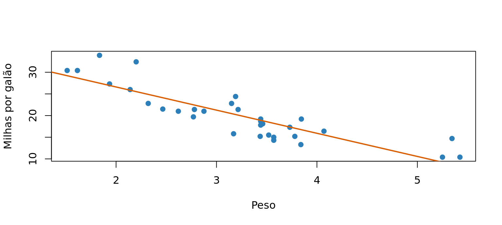
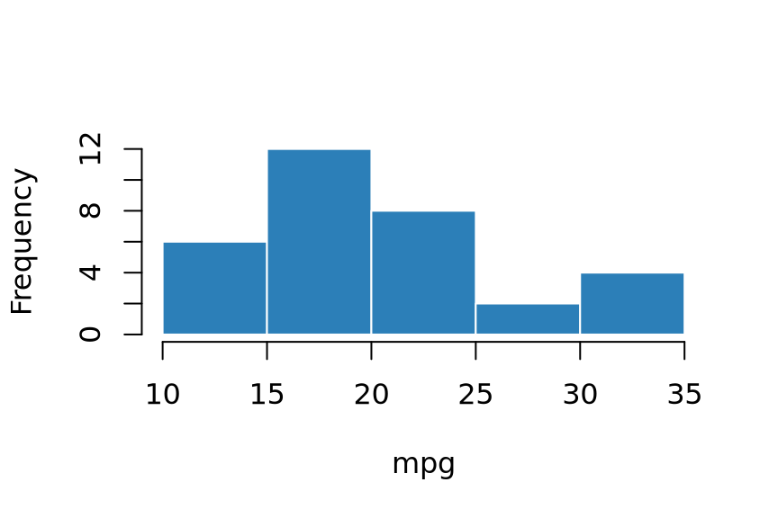
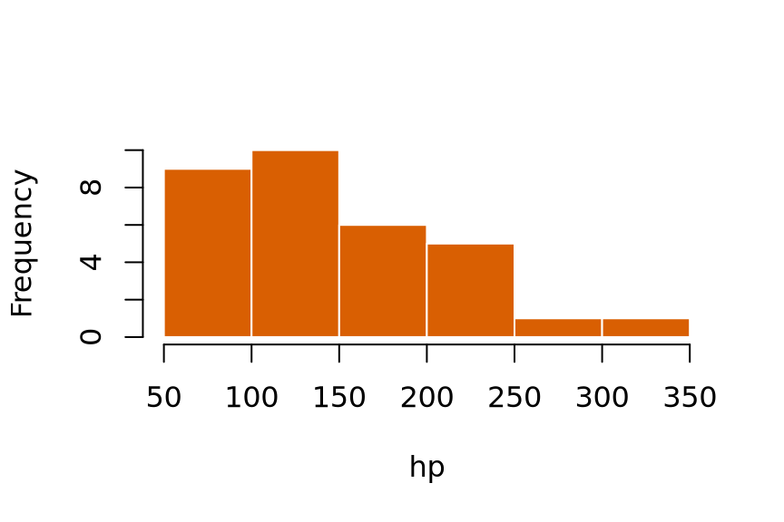

flowchart TD
A[FASTQ] --> B[QC]
B --> C{Qualidade OK?}
C -->|Sim| D[Alinhamento]
C -->|Não| E[Trimagem]
E --> B
Introdução ao Quarto
Simpósio Norte-Nordeste de Bioinformática
Julia Apolonio e Romério Filho
18/08/2026
Boas-vindas!
O que você vai levar daqui
- Escrever documentos que misturam texto, código e resultados
- Gerar HTML, PDF, Word e slides do mesmo arquivo
- Fazer relatórios que se atualizam sozinhos quando o dado muda
- Personalizar a aparência com CSS e
_brand.yml
Dica
Todo o material, com as soluções, está em minicurso-quarto.qmd.
Agenda
| Bloco | Tempo | |
|---|---|---|
| 1 | Introdução | 20 min |
| 2 | O Quarto | 25 min |
| 3 | Notação Markdown — Ex. 1 e 2 | 70 min |
| — | ☕ Intervalo | 15 min |
| 4 | Header / YAML — Ex. 3 | 35 min |
| 5 | Personalização — Ex. 4 | 50 min |
| 6 | Code chunks — Ex. 5 | 70 min |
| 7 | Encerramento | 15 min |
1. Introdução
O problema
- Rodar o pipeline
- Gerar 12 figuras e 5 tabelas
- Salvar tudo em
resultados/ - Abrir o Word e colar figura por figura
- Escrever o texto ao redor
- “Pode trocar o corte de p < 0,05 para p < 0,01?”
- Voltar ao passo 1
A regra de ouro
Se você copiou e colou um resultado para dentro do texto, ele vai ficar desatualizado. É só uma questão de tempo.
A solução: literate programming
Texto, código e resultado no mesmo arquivo.
Você escreve um .qmd. O knitr executa o código, o Pandoc converte, e saem HTML, PDF, Word ou slides — todos com os mesmos resultados.
A ideia é de Knuth (1984); a prática virou padrão em pesquisa reproduzível (Peng 2011; Sandve et al. 2013).
Por que usar Quarto?
- Reprodutibilidade — o número no texto foi calculado, não digitado
- Rastreabilidade —
.qmdé texto puro → versiona no Git - Um fonte, vários destinos — HTML, PDF, Word, slides, site, livro
- Poliglota — R, Python, Julia, Observable JS
- Bonito por padrão — sem precisar saber CSS
Estes slides foram feitos em Quarto. O material do curso também.
Extensões
| Extensão | Serve para |
|---|---|
quarto-ext/fontawesome |
Ícones |
quarto-journals/* |
Templates de periódicos |
quarto-ext/lightbox |
Ampliar figuras ao clicar |
shafayetShafee/downloadthis |
Botão de download |
quarto-ext/pointer |
Laser pointer nos slides |
Documentação
- 📘 Guia: https://quarto.org/docs/guide/
- 🔎 Referência de YAML: https://quarto.org/docs/reference/
- 🖼️ Galeria: https://quarto.org/docs/gallery/
- ⭐ Awesome Quarto: https://github.com/mcanouil/awesome-quarto
- 💬 Dúvidas: https://github.com/quarto-dev/quarto-cli/discussions
Dica
Toda página da documentação mostra o .qmd que gerou o exemplo. Quando algo parecer mágico, vá no código-fonte.
2. O Quarto
As três partes de um .qmd
E a terceira parte, o chunk:
Anatomia de um chunk
```{r}→ abre o bloco e define a linguagem#|(hash-pipe) → opções do chunk, em YAML```→ fecha o bloco
Renderização
No Positron / RStudio: botão Render ou Ctrl/Cmd + Shift + K.
Dica
Deixe quarto preview rodando numa aba do terminal o curso inteiro.
Formatos de saída
| Formato | YAML | Nota |
|---|---|---|
| Página web | html |
Padrão, interativo |
| Artigo | pdf |
Via LaTeX (TinyTeX) |
| Word | docx |
Para colaborar fora do R |
| Slides | revealjs, beamer, pptx |
revealjs é HTML |
| Site / livro | projeto website / book |
Vários .qmd |
| Painel | dashboard |
Value boxes, abas |
| README | gfm |
Markdown do GitHub |
R Markdown vs Quarto
| R Markdown | Quarto | |
|---|---|---|
| Motor | Pacote rmarkdown (exige R) |
Executável independente |
| Linguagens | R (+ reticulate) |
R, Python, Julia, OJS |
| Opções | {r fig.width=6} |
#| fig-width: 6 |
| Cross-refs | Precisa de bookdown |
Nativo |
| Callouts, tabsets | Pacotes / CSS | Nativos |
| Slides | xaringan, ioslides |
revealjs |
Duas armadilhas da migração
Ponto vira hífen
fig.cap→fig-cap,out.width→out-widthOpções saem da chave e vão para o corpo
Antes:
{r meu-chunk, echo=FALSE, fig.cap="Legenda"} plot(x, y)
Agora:
Boa notícia: quarto render arquivo.Rmd funciona. Migre aos poucos.
3. Notação Markdown
Formatação de texto
itálico
negrito
os dois
riscado
código
H2O
10-9
versalete
citação
Parágrafo novo exige linha em branco.
Títulos
Um # só
Se você usa title: no YAML, comece as seções em ##.
Links e imagens
A diferença entre link e imagem é o ! na frente.
Use caminhos relativos — imagens/fig.png, nunca /home/seu-usuario/...
Listas
- item
- outro
- subitem
- primeiro
- segundo
- FASTQ
- sequências e qualidades
Linha em branco antes da lista. É o bug nº 1 de Markdown.
🧪 Exercício 1
Crie exercicio1.qmd com:
- Header YAML: título, autoria,
format: html ## Sobre mim— parágrafo com negrito e itálico## Meus hobbies— lista não ordenada de 3 hobbies, sendo que um tem dois subitens## Minha rotina— lista ordenada de 4 etapas do seu dia- Um link e uma imagem com
width=70%
Solução na seção 4.5 do material
Footnotes
O rótulo ([^1], [^metodo]) é só interno — a numeração final é automática e segue a ordem de aparição.
Tabelas de pipe
| Gene | log2FC | p-ajustado |
|---|---|---|
| BRCA1 | 2,31 | 0,0001 |
| TP53 | -1,87 | 0,0034 |
Alinhamento: :--- esquerda · ---: direita · :---: centro
Classes: .striped .hover .bordered .sm
Tabelas de grade
Quando a célula precisa de mais de uma linha:
Acima de ~10 linhas: gere a tabela por código (knitr::kable, gt).
Conversor útil: https://www.tablesgenerator.com/markdown_tables
Equações
Em linha: $E = mc^2$ → \(E = mc^2\)
Em bloco, com id para referenciar:
\[ \log_2 \text{FC} = \log_2\!\left(\frac{\mu_{trat}}{\mu_{ctrl}}\right) \]
E no texto: A @eq-log2fc mostra... → “A Equação 1 mostra…”
Diagramas — Mermaid
Diagramas — Graphviz
digraph G {
rankdir=LR; // LR, TD, BT, RL
bgcolor="transparent";
node [shape=box,
style="rounded,filled",
fillcolor="#EAF2F8",
color="#2C7FB8",
fontname="Helvetica",
fontsize=11];
edge [color="#7A8894",
arrowsize=0.7,
style=dashed];
// nó com estilo próprio
saida [label="_site/",
shape=folder,
fillcolor="#FFE9D6"];
"_quarto.yml" -> "analise.qmd";
"styles.css" -> "analise.qmd";
"analise.qmd" -> saida
[style=solid, penwidth=2];
}O que dá para mexer
rankdir— direção do fluxoshape—box,ellipse,folder,cylinder,diamondfillcolor/color— preenchimento e bordastyle—dashed,bold,roundedpenwidth— espessura da seta
Citações
No YAML:
| Sintaxe | Saída |
|---|---|
[@sandve2013] |
(Sandve et al., 2013) |
@sandve2013 |
Sandve et al. (2013) |
[@a; @b] |
(A, 2011; B, 2013) |
[-@peng2011] |
(2011) |
De onde vem o .bib?
- Zotero com o plugin Better BibTeX exporta e mantém o arquivo atualizado sozinho.
- No R,
citation("DESeq2")devolve a entrada BibTeX do pacote — sempre cite as ferramentas que você usou. - Para o estilo do periódico, baixe o
.cslem citation-style-language/styles.
🧪 Exercício 2
Adicione ao seu documento:
- Uma tabela com 4 genes e 3 colunas, com id
#tbl-genes, referenciada no texto - Uma equação numerada (
#eq-media), referenciada no texto - Um diagrama Mermaid do seu fluxo de trabalho
- Uma footnote
- Duas citações + um
referencias.bibque você mesmo cria + seção de referências
Solução na seção 4.11 do material
☕ Intervalo — 15 min
4. Header
O painel de controle
Mínimo
Confortável
Completo
Opções de HTML que valem a pena
| Opção | Efeito |
|---|---|
toc: true / toc-location: left |
Sumário |
number-sections: true |
Numera seções (necessário para @sec-) |
code-fold: true / show |
Código recolhido |
code-tools: true |
Menu para baixar o fonte |
df-print: paged |
Data frames paginados |
theme: cosmo |
Tema Bootswatch |
anchor-sections: true |
Link permanente nos títulos |
embed-resources
A opção mais útil deste curso
Sem ela: documento.html + pasta documento_files/.
Se você mandar só o HTML por e-mail, ele chega quebrado.
Com ela: um único arquivo, com tudo embutido, que abre offline.
Custo: arquivo maior e render um pouco mais lento.
self-contained: true era o nome antigo — está depreciado.
Cache
A pegadinha
O knitr detecta mudanças no código, não nos dados.
Editou o CSV sem tocar no código? O cache serve o resultado velho.
freeze: cache para projetos
Os resultados vão para _freeze/ e podem ser commitados.
Dica
Isso permite publicar o site num servidor que não tem R instalado — e sem subir os dados brutos.
Documento vs chunk
| Documento | Chunk | |
|---|---|---|
| Onde | Topo, entre --- |
Dentro, com #| |
| Alcance | Tudo | Só ali |
| Sintaxe | YAML | YAML com #| |
Opções de chunk essenciais
| Opção | Efeito |
|---|---|
eval |
Executa? |
echo |
Mostra o código? |
output |
Mostra o resultado? |
warning / message |
Mostra avisos / mensagens? |
error: true |
Continua mesmo com erro |
include: false |
Executa e não mostra nada |
label |
Identificador (para cross-refs) |
fig-cap, fig-width, out-width, fig-alt |
Figuras |
O chunk setup
Por convenção, o primeiro chunk do documento. Concentra tudo que os demais vão precisar.
| Linha | O que faz |
|---|---|
#| label: setup |
Dá nome ao chunk — é o nome que aparece se der erro |
#| include: false |
Executa tudo, mas não mostra código nem saída |
library(tidyverse) |
Carrega os pacotes uma vez só, para o documento inteiro |
opts_chunk$set(...) |
Define o padrão de todos os chunks seguintes |
set.seed(42) |
Fixa a aleatoriedade: simulação, bootstrap, UMAP… |
🧪 Exercício 3
Transforme o header do seu documento:
- Autoria com
nameeaffiliation;date: today;lang: pt-BR - Sumário à esquerda (profundidade 2) e seções numeradas
code-foldecode-toolsembed-resources: true- Sem avisos nem mensagens
- Um chunk
setupcominclude: false - Um chunk que executa mas não mostra o código
- Um chunk com
cache: true
Desafio: um chunk que mostra sem executar (comando de cluster)
Solução na seção 5.5 do material
5. Personalização
Callouts
note — observação
tip — dica
warning — aviso
important — crítico
caution — cuidado
Atributos: collapse="true", appearance="simple", icon=false
Colunas
Você escreve
Sai isto
O texto explicativo fica aqui, e a figura fica ao lado.
A div externa precisa de mais : que as internas — :::: fora, ::: dentro. É assim que o Pandoc sabe qual fecha qual.
Tabsets
CSS
styles.css
No .qmd
Como fica
Resultados
O ponto-chave é o controle de qualidade.
Botão direito → Inspecionar mostra qual classe controla cada elemento.
SCSS: mexer no tema por dentro
O CSS pinta por cima; o SCSS muda as variáveis antes de o tema ser compilado.
Como fica
Uma variável em scss:defaults repercute em tudo — links, botões, callouts, tabelas.
O mesmo documento, dois temas
☀️ flatly
Expressão diferencial
Foram testados 1 843 genes; 118 passaram o filtro.
Nota — dados simulados.
res <- results(dds)
🌙 darkly
Expressão diferencial
Foram testados 1 843 genes; 118 passaram o filtro.
Nota — dados simulados.
res <- results(dds)Mesmo .qmd, mesmo conteúdo — só o theme mudou. Nada no texto foi tocado.
_brand.yml
Uma identidade visual, todos os formatos.
Nada precisa ser declarado no .qmd. Para desligar: brand: false.
_quarto.yml: o projeto inteiro
Vale para todos os .qmd — e cada um pode sobrescrever.
Personalização no PDF
Erros clássicos
- Pacote LaTeX faltando →
quarto install tinytex - Figura “fugindo” de página →
fig-pos: "H" - CSS não funciona no PDF. No PDF, o equivalente é LaTeX.
Conteúdo condicional
🧪 Exercício 4
- Um callout de cada tipo — um com título próprio, outro recolhível
- Um bloco de duas colunas
- Um tabset com duas abas
- Um
styles.csscom a classe.destaqueeh2colorido — e aplique - Tema claro/escuro alternável
Desafios
- Adicione
format: pdfe use conteúdo condicional para uma frase aparecer só no HTML - Um
_brand.ymlcom duas cores e uma fonte do Google
Solução na seção 6.5 do material
🍽️ Hora do almoço
Voltamos para o último bloco: code chunks.
Deixe o quarto preview rodando — a gente retoma direto do seu documento.
6. Code chunks
O básico
O código aparece, o resultado aparece embaixo, e o resultado é de verdade — foi calculado agora, na renderização.
Código inline: o recurso mais subestimado
Você escreve:
Foram analisadas
r length(expressao)medidas, com média der round(mean(expressao), 2).
E sai:
Foram analisadas 120 medidas, com média de 8.2 e desvio de 1.93.
Importante
Se o dado mudar, a frase muda sozinha.
Plots

Figura 1: Peso versus consumo no mtcars.
Opções de figura
| Opção | Efeito |
|---|---|
fig-cap |
Legenda |
fig-width / fig-height |
Tamanho em polegadas com que o R desenha |
out-width |
Tamanho na página ("70%") |
fig-align |
left, center, right |
fig-alt |
Texto alternativo — acessibilidade |
fig-dpi |
300 para publicação |
column: margin |
Figura na margem |
Subfiguras num só chunk


Ids automáticos: @fig-slide-painel-1, @fig-slide-painel-2
Tabelas por código
O básico, sempre funciona, em todos os formatos.
Tabelas de publicação: títulos, notas de rodapé, formatação por coluna.
| Consumo por modelo | |||
| mpg | cyl | hp | |
|---|---|---|---|
| Mazda RX4 | 21.0 | 6 | 110 |
| Mazda RX4 Wag | 21.0 | 6 | 110 |
| Datsun 710 | 22.8 | 4 | 93 |
| Fonte: Motor Trend, 1974. | |||
Agrupa colunas e linhas, fixa cabeçalho, colore células.
Motor
|
|||
|---|---|---|---|
| mpg | cyl | disp | |
| Mazda RX4 | 21.0 | 6 | 160 |
| Mazda RX4 Wag | 21.0 | 6 | 160 |
| Datsun 710 | 22.8 | 4 | 108 |
Cross-references
Duas regras: rótulo com o prefixo certo + @rotulo no texto.
| Elemento | Prefixo | Rotular com | Citar |
|---|---|---|---|
| Figura (chunk) | fig- |
label + fig-cap |
@fig-x |
| Figura (markdown) | fig- |
{#fig-x} |
@fig-x |
| Tabela (chunk) | tbl- |
label + tbl-cap |
@tbl-x |
| Tabela (markdown) | tbl- |
: Cap {#tbl-x} |
@tbl-x |
| Equação | eq- |
$$..$$ {#eq-x} |
@eq-x |
| Seção | sec- |
## Tít {#sec-x} |
@sec-x |
Cross-reference na prática
Você escreve
A numeração e o link são automáticos. Insira uma figura antes desta e ela vira “Figura 2” sozinha — em todo o documento.
Três armadilhas de cross-reference
- Sem legenda, sem referência.
label: fig-xsemfig-capnão vira figura referenciável. @sec-exigenumber-sections: true.- O prefixo é literal.
label: figura-1❌ ·label: fig-1✅
Variações: @fig-x → Figura 1 · [@fig-x] → (Figura 1) · [-@fig-x] → 1
Outras linguagens
engine: knitr mistura R e Python (via reticulate).
engine: jupyter roda um kernel só. Documento só-Python usa jupyter sozinho.
🧬 Exercício 5 — o integrador
Construa exercicio5.qmd: um relatório de expressão diferencial completo.
Header e dados
- Autoria,
date: today,lang: pt-BR - TOC à esquerda, numeração,
code-fold: show,code-tools,embed-resources - Sem warnings/messages;
bibliography - Chunk
setupcomset.seed(2026) - Simule 2000 genes × 12 amostras, com 150 genes DE
- Chunk com cache: log2FC, teste t, correção BH
Resultados e acabamento
- Tabela dos 10 mais significativos →
@tbl-top-genes - Volcano plot →
@fig-volcano(comfig-alt!) - Painel com 2 subfiguras →
@fig-diagnostico - 3 números vindos de código inline
- Equação numerada do log2FC
- Um callout de limitação
- Citação + referências
sessionInfo()
🧬 Exercício 5 — colas de código
```{r}
set.seed(2026)
n_genes <- 2000; n_por_grupo <- 6; n_de <- 150
mu <- rgamma(n_genes, shape = 2, scale = 60)
contagens <- sapply(1:(2*n_por_grupo),
\(j) rnbinom(n_genes, mu = mu, size = 8))
rownames(contagens) <- sprintf("GENE%04d", 1:n_genes)
grupo <- factor(rep(c("controle","tratado"), each = n_por_grupo))
# aplica o efeito só nas amostras tratadas
genes_de <- sample(n_genes, n_de)
efeito <- sample(c(2.5, 0.4), n_de, replace = TRUE)
contagens[genes_de, grupo == "tratado"] <-
round(contagens[genes_de, grupo == "tratado"] * efeito)
``````{r}
cpm <- t(t(contagens) / colSums(contagens)) * 1e6
log_cpm <- log2(cpm + 1)[rowMeans(cpm) > 1, ]
log2fc <- rowMeans(log_cpm[, grupo == "tratado"]) -
rowMeans(log_cpm[, grupo == "controle"])
pvalor <- apply(log_cpm, 1, \(y)
t.test(y[grupo == "tratado"], y[grupo == "controle"])$p.value)
res <- data.frame(gene = rownames(log_cpm), log2FC = log2fc,
padj = p.adjust(pvalor, "BH"))
res <- res[order(res$padj), ]
``````{r}
#| label: fig-volcano
#| fig-cap: "Volcano plot."
#| fig-alt: "Dispersão de log2FC contra -log10(p), em forma de V."
cor <- ifelse(res$padj < 0.05 & abs(res$log2FC) > 1, "#D95F02", "grey70")
plot(res$log2FC, -log10(res$padj), pch = 19, cex = .6, col = cor,
xlab = "log2 FC", ylab = "-log10(p ajustado)")
abline(h = -log10(0.05), v = c(-1, 1), lty = 2)
```Depois, no texto: cerca de r n_sig genes, dos quais r n_up super-expressos.
$$
\log_2 FC_g = \overline{\log_2 CPM}_{trat}
- \overline{\log_2 CPM}_{ctrl}
$$ {#eq-log2fc}
Conforme a @eq-log2fc...
::: {.callout-warning}
## Limitações
Dados simulados; o teste *t* ignora a relação
média-variância. Use DESeq2 no mundo real.
:::
Seguimos @sandve2013.
## Referências
::: {#refs}
:::🎯 Critério de sucesso
Troque n_de <- 150 por n_de <- 300 e renderize de novo.
Tudo deve mudar sozinho: a tabela, as duas figuras e os números do parágrafo — sem você tocar em uma vírgula do texto.
Importante
Se usou cache: true, vai precisar de dependson: ["simulacao"].
Senão o cache serve o resultado antigo — exatamente a pegadinha do bloco 4.
Solução completa e comentada na seção 7.7 do material
7. Encerramento
O que vimos
flowchart LR
Q(("Quarto")) --> M["Markdown"]
Q --> H["Header"]
Q --> P["Personalização"]
Q --> C["Code chunks"]
M --> M1["Texto · tabelas · equações<br/>diagramas · citações"]
H --> H1["YAML · opções de chunk<br/>embed-resources · cache"]
P --> P1["Callouts · colunas · tabsets<br/>CSS · SCSS · brand.yml"]
C --> C1["Plots · tabelas · inline<br/>cross-references"]
Cinco hábitos para levar daqui
- Nunca digite um número que o computador pode calcular. Use código inline.
- Comece pelo
embed-resources: true. Relatório que abre quebrado não é lido. - Rotule figuras e tabelas desde o início. Renomear depois dói.
- Deixe o
quarto previewrodando. Ver o erro na hora que ele aparece custa segundos; achá-lo depois de 40 edições custa a tarde. - Demorou mais de 30 s? Use cache — e lembre do
dependson.
Para onde ir agora
| Quero… | Procure por |
|---|---|
| Site do laboratório | Quarto Websites + GitHub Pages |
| Escrever a dissertação | Quarto Books, quarto-journals |
| Painel de resultados | format: dashboard |
| Um relatório por amostra | Parâmetros + quarto_render() |
| Ambiente reproduzível | renv, conda, Docker |
| Publicar rápido | quarto publish quarto-pub |
No material completo: anexos sobre parâmetros, publicação, solução de problemas, environment.yml e uma cola rápida.
Obrigada!
📁 github.com/juliaapolonio/intro-to-quarto
📘 minicurso-quarto.qmd — conteúdo e soluções
Dúvidas?
Introdução ao Quarto — SNNB 2026